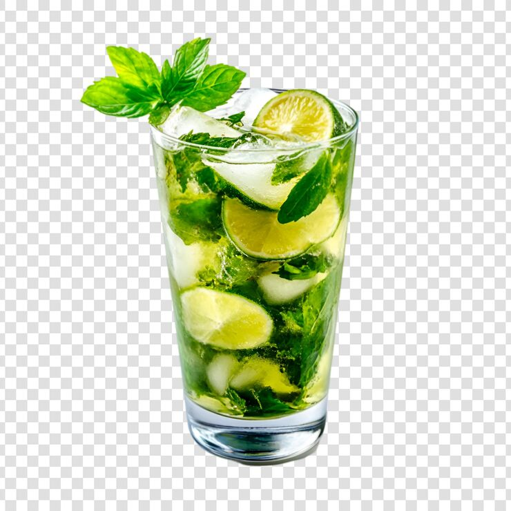
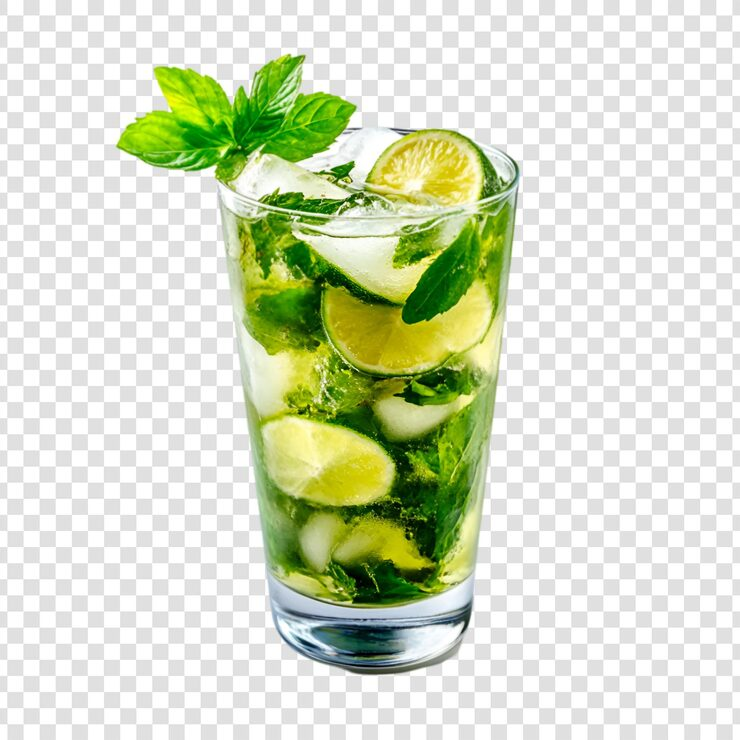

Fiche Cocktail : Mojito
 

Ingrédients
- 6 cl de rhum blanc
- 3 cl de jus de citron vert
- 2 cuillères à café de sucre
- 6 feuilles de menthe
- Eau gazeuse
- Glaçons
Préparation
- Déposez les feuilles de menthe et le sucre dans un verre.
- Pilez délicatement la menthe pour libérer les arômes.
- Ajoutez le jus de citron vert et le rhum blanc.
- Remplissez le verre de glaçons.
- Complétez avec de l'eau gazeuse.
- Mélangez doucement et servez avec une paille.
Présentation
Décorez avec une branche de menthe et une rondelle de citron vert.
Conseil
Pour un goût plus intense, laissez infuser la menthe quelques minutes avant de servir.
Voici les 10 Cocktails préférés des français